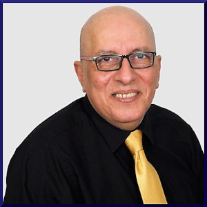

Welcome, and thank you for visiting
4Z for Quality website. I am
Dr. Tarek Elsherif, Founder and Chief Executive Officer.
Our company's purpose - solving complex ISO challenges, and all quality-related matters - is what we aspire to do, in a comprehensive and sustainable context. This purpose has been clear, since we set out to establish a premium-quality consultancy services company.
The values we share with our clients, are embodied in what we do at
4Z for Quality from day to day. All team members must exhibit ethical and honest behavior, and on the other hand, we are committed to offer fair and equal code of conduct, in a safe and healthy workplace. We believe that in such an environment, sound decision making, positive performance, and effective strategies, flow spontaneously and naturally, on the basis of the give-and-take among all team members. In fact, our business model is indeed our platform for success.
I have always believed that when it comes to defining and communicating a company’s vision and goals, conciseness is a virtue.
We continuously focus on:
- Quality – exceptional quality is what satisfies our customers, and it is the guarantee for the growth and retention of the customer base.
- Service – excellent service is not just a theoretical concept, it is the practical way by which we develop customer loyalty, and maintain it.
- Credibility – undebatable credibility is the driving force behind our growth in the short- and long-term.
- Performance – peak performance is a commitment for us, to be fully prepared as individuals and as a company to do our best.
We follow the continual improvement approach at all times. We have adopted Total Quality Management (TQM) from the beginning, and eversince,
4Z for Quality has embarked on a relentless and ongoing pursuit of continuous developmen, through the use of performance monitoring tools, including Six Sigma. We are constantly keen on evaluating performance, to reduce the cost of services, to simplify procedures, to improve efficiencies, and to gain more clients.
We put corporate responsibility as a top priority. That's why our reputation for integrity and honesty attracts excellent team members, great clients, and greater opportunities. It is the key to our success now, and in the future.
We care about the health and well-being of our team members, by providing a safe work environment and encouraging a healthy lifestyle. Above all, we aim to be fair and honest with our team members, and to provide them with meaningful and enjoyable work despite its difficulty. But we also believe that no one has a monopoly on good ideas, so in order to grow professionally, we respect any constructive suggestions from inside or outside the company, to improve performance.
I am proud of the diligence and skills our employees show, and the exceptional return they bring to the company. This allows us to provide added value, and provide superior service to our customers, who can always trust us and count on us to keep our promises. Executives and employees at
4Z for Quality are keen to assess and review the needs of our customers, and the effectiveness of the services we provide on a regular basis.
As a company working in the field of
ISO and quality, we have chosen
"ISO made Easy" to be the slogan of
4Z for Quality, due to our prior knowledge of the stereotyped image of ISO standards and terminology, which may seem at first sight, especially to the non-specialist, somewhat complicated. In following our slogan, we promise to simplify ISO standards as a concept and as a practice. Our team will be dedicated to maximize customer satisfaction, by making quality and ISO standards a prevalent culture, not just a label, or a certificate attached to the wall in the workplace.
We pride ourselves on selecting the right team to meet the ambitious and changing needs of our clients. I am confident that we will achieve leadership in our field, through our enthusiast and dedicated team members, and above all through our loyal and satisfied customers.
This is
4Z for Quality – a company with a vision we are proud of, and a bright future we are sure of!
On behalf of our team, I invite you to explore our
website, and learn more about everything we offer. I'm sure you'll see why we love what we do.
Sincerely,
Dr. Tarek Elsherif